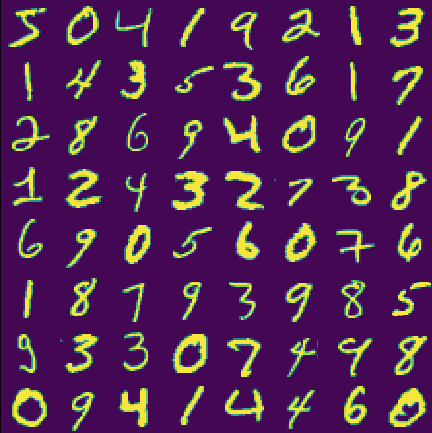

Training your RBM on MNIST
Contents
Training your RBM on MNIST#
In this section we will use our RBM code to tackle a more realistic and difficult engineering task: learning hand-written digits. This is a very standard test in the machine learning community. A good reference for RBM training can be found here.
After training, your RBM will have learned some general features of hand-written digits and be able to generate its own convincing drawings of numbers. In addition to being used as a generative model, a trained RBM can also be useful for anomaly detection, for example, checking if a particular image is likely to be from the data distribution or from another distribution. In our case, that means that \(p(v_{digit}) \gg p(v_{letter})\) for our RBM if \(v_{digit}\) is an image of a hand-written digit and \(v_{letter}\) is an image of a hand-written letter. RBMs can also be used as “feature-detectors” that supplement supervised learning methods in machine learning.
MNIST Dataset#
The training data set that we will use to train our RBM is the MNIST database. The MNIST hand-written digit database is a dataset of images and labels. Each image is a picture of a hand-written number between \(0\) and \(9\). The label indicates which of these numbers the image corresponds to. Since we are doing unsupervised learning, we will ignore the labels and only use the images of the digits themselves as our training data set for the RBM.
The easiest way to get the data is to do the following:
import torch
import torch.utils.data
batch_size = 1
train_loader = torch.utils.data.DataLoader(
datasets.MNIST('./data',
train=True,
download = True,
transform = transforms.Compose(
[transforms.ToTensor()])
),
batch_size=batch_size
)
myData=[]
for idx, (data,target) in enumerate(train_loader):
myData.append(np.array(data.view(-1,784)).flatten())
print(myData[0])
print(np.shape(myData[0]))
myData=np.matrix(myData)
Let’s get a little bit familiar with this data.
Each row of myData is 784 numbers which can be reshaped into a 28x28 array which looks like the handwritten number. For example, if we do
pic=np.copy(myData[0,:])
pic=pic.reshape((28,28))
plt.matshow(pic)
plt.show()
should give you a picture of a written number. We are regularly going to want to look at a whole grid of written numbers.
Grading
Write a function PlotMe(data) which takes a \(64 \times 784\) array of numbers (i.e. PlotMe(myData[0:64,:]) and makes an \(8\times 8\) grid of numbers. It should look something like

If you print out myData you will see that the data is a number between 0 and 1. Because we are working with spins, we would like to convert each number to either be zero or one. To do this, every time you use the data as part of your RBM (i.e. to set the spins), convert the number \(p\) into 1 with probability \(p\) and 0 otherwise.
Your RBM for this part of the assignment needs to be using 1 and 0 as its spin values not 1 and -1. I have spent many hours tracking down the bug in my assignment where I was using 1 and -1
Parameters#
eta=0.1
M=64
nv = 768
nh = 10 (initially); you may eventually want to test nh=400
Initialize the weights \(W_{ij}\) and the visible biases \(a_i\) with random numbers from a uniform distribution between \(-0.01\) and \(0.01\). Initialize the hidden biases \(b_j\) to zero. (It seems that the training can get stuck in a bad local minimum if you initialize the hidden biases to be too large.)
If you have set this up correctly, I find that if use \(n_h=10\) it should take 20 seconds per epoch (on google colab) and \(n_h=400\) should take 80 seconds per epoch.
Analyze your results#
We will now analyze our results.
Reconstruction#
The simplest test to see what your RBM is do a reconstruction of the data. In other words, once you have a paramaterized RBM go ahead and set the visible spins to be some data - i.e. visible=np.copy(myData[0:64,:]). Then use the function PlotMe(visible) above to plot these spins. They will definitely look good because you’re just looking at the data. Now, go ahead and do a single SampleHidden and SampleVisible. This will change the visible spins completely based on the hidden spins (that were generated from the visible spins). Because the Markov chain hasn’t had a long time to walk away, you should see roughly the same letters but with some non-trivial noise.
We can remove some of this noise by returning the probability of the visible spins (given the hidden spins) instead of just one sample. This is actually equivalent to sampling the visible spins many different times over the same hidden spins and then averaging them. Write a function SampleVisibleProb which returns not a sample of the visible spins but their probability distribution. Make a grid of this data using PlotMe(visible) as well. It should look much better.
Grading
Paste these three plots into your document.
A place where reconstruction is potentially useful is in recalling a memory similar to what was done in the Hopfield network. Take your RBM and drop half your visible spins. Then see if you sample the hidden and visible spins if you get back the original value.
Grading
Report on what you get under this approach.
Resampling#
In practice, the RBM should not only be able to reconstruct the letters after one Gibbs sample but also a sample from the entire Markov chain should give you the same distribution of letters that you started with. This requires a lot more training (and possible larger number of hidden spins). You can test this by sampling back and forth a lot (~10000) of times. An intermediate is to go back and forth about 100 times which lets you leave the current numbers further behind but still give you a sample of new numbers. You again might want to average over all the hidden spins. (When I do this I get numbers but don’t get the distribution I started out with. You should just report that you got some numbers but if you manage to pull off an optimization that gets the right distribution let me know how you did it)
Grading
Plot the resampled distribution that you get by running your Markov chain 1000 times. You should report both the SampleVisible and SampleVisibleProb results for your very last sample (all others need to be SampleVisible).
Weights#
Visualize the weights and biases. Since the visible spins \(v_i\) form a 2D image, they can be relabeled as if they were on a 2D square grid \(v_i \rightarrow v_{(x,y)}\), where \((x,y)\) is a coordinate in the grid. Therefore, for a given hidden spin \(h_j\), the weights connecting to the visible spins \(W_{ij}\) can be reshaped into a matrix \(W_{ij} \rightarrow W^{j}_{(x,y)}\). These matrices can be visualized, say with matplotlib.pyplot.matshow in python. Visually, these weight matrices represent the correlations the hidden spins have with the visible spins. In a trained RBM, the weight matrices should look like “features” that contain elements of handwritten digits, such as straight and curved strokes. If your weights all look noisy or identical for all \(j\), then probably the training is not working correctly. My weights looked much better when I plotted them in grayscale plt.imshow(M,cmap=plt.cm.binary)
Grading
Paste a visualization of your weights into your document.
Discrimination#
One thing an RBM is good at is distinguishing between the thing it was trained on (a written digit) versus something else (say random noise). You can ask your RBM for the relative probability of these things by computing the free energy of two different images and see what is more likely.
Grading
Report your free energy for these two examples.